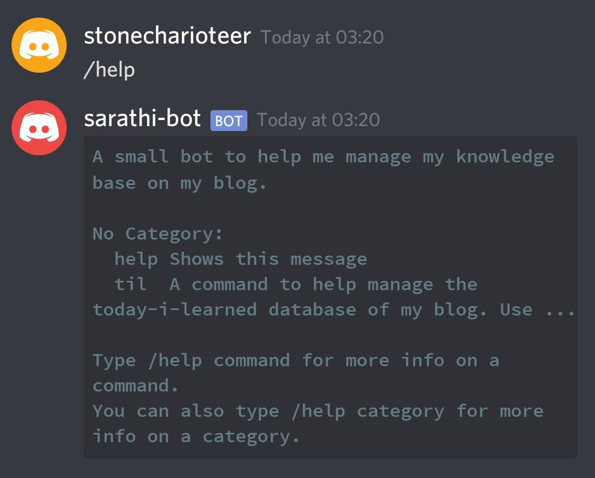
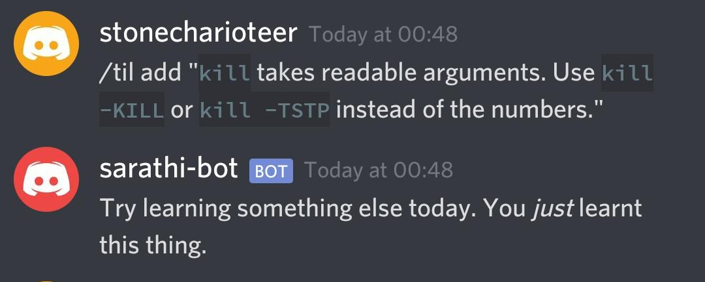
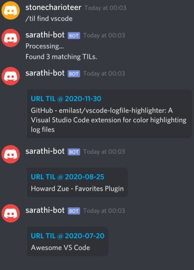

Sarathi - A Personal Discord Bot¶
I’ve been maintaining a TIL page for a while now, and while the idea is great, I have had some issues updating the sheet daily.

My flow has been like this:
Whenever I find a link / factoid interesting, I save them in a WhatsApp group where I’m the only member for later record.
I add these to the TIL page whenever I could. Lately, I’ve not been able to do so.
As you can see, the problems with this approach are many:
This is too manual. I’m someone who automates everything. I can’t be doing this.
Finding links is hard unless I’m using
ripgrepon a non-mobile device.Categorizing things and updating the look of my TIL page is hard.
And I’ve been meaning to leverage a Telegram bot for this task for quite some time.
However, I have not gotten back to the task in ages, necessitating the use of my rudimentary manual method for months on end. So this weekend, as I prep myself to shift my body clock to attend David Beazley’s RAFT Course, I decided to use the midnight oil to write my own bot, one that I could add to.
Why Discord?¶
I’ve been using discord to talk to a few friends and communities lately, and I’ve found it’s integration with Linux to be amazing. I love the web-UI, and the desktop app which works quite well everywhere. I also use the mobile app on my phone and tablet.
And [it has a Python library], with quite a robust API no less.
Resources¶
I relied on the following resources for this task.
Goals¶
I wanted to be able to do the following:
Create bot that would take arbitrary commands and parses them for a URL or factoid.
Extract a title from the URL if need be.
Maintain a time-based
jsonon my Blog’s github repository with all the links and factoids neatly arranged.Automatically commit the
jsonto github.Regenerate the
til.mdfile using ajinja2template automatically.Pushing code to Github so that the blog is update instantly.
Allow querying of the knowledge-base with a simple search API.
Outcome¶
While I won’t go to much lengths to describe how I coded this bot, the Real Python article manages to do that better, I’ll just go ahead and show off the result:
Help¶
The bot uses / as a command prefix and outputs a help string on querying with /help.
One observation I’ve come to make to myself is that the API is quite robust, but the documentation is severly lacking.
However, I feel users of click will really grok how this library is written.
Attempting to add a TIL that was previously added¶

If you try adding the same TIL on the same date, Sarathi will just remind you that you just learnt this.
If you try adding a TIL that exists elsewhere in the database, Sarathi will make note of this in the repeated_added_on column.
While this is not yet used, I’d like to analyse whenever I encounter things I have encountered before and think I’ve not recorded.
It could be a good way of identifying ineffectiveness in how I learn.
Querying the JSON¶
To query for a TIL or a couple, just use /til find <search-string>. Right now, the search does not support regex, but I plan to integrate that later.
The search string is matched against the categories, or in the URL/factoid body.

Improvements¶
Some things I’m hoping to integrate in the future:
TODO bot to manage my TODO list with a similar file. However, I need to use the VSCode compliant TODO files.
Book Bot to interface with my bookshelf’s API
Book reading progress bot
Anki Cards to assist in learning using the TILs and other notes.
Interface with my notes repository to auto-generate learning packages.
Source Code¶
You can find the repo to sarathi here. While very esoteric in its usecase, you might be able to learn a few things about how to use the discord.py library from it.